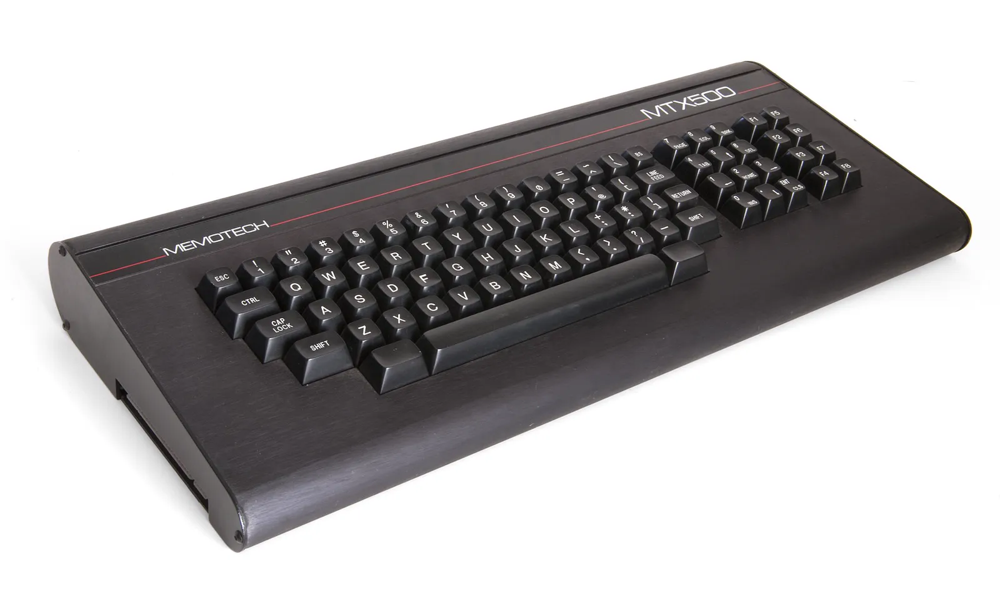
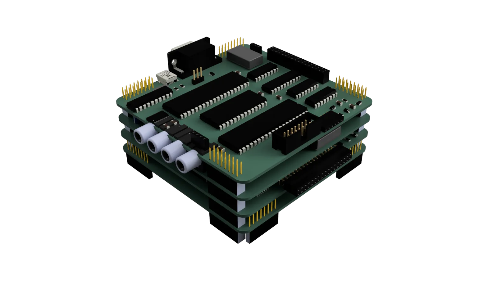
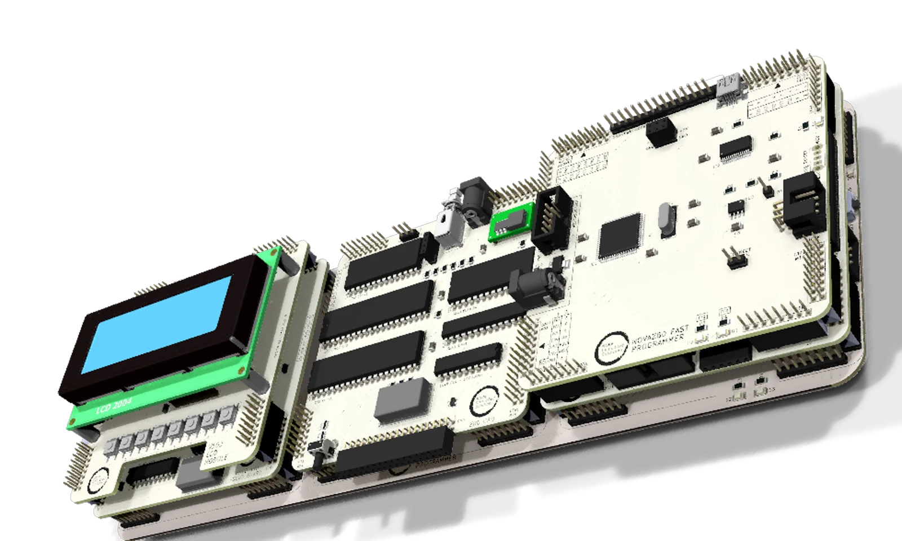
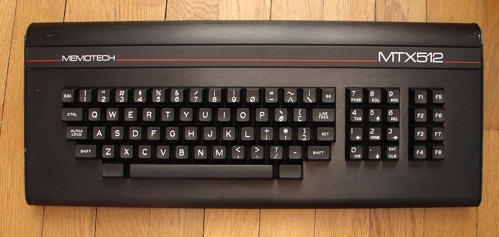

I've always loved the MTX.
NOVAZ80 is a hobby project, built just for fun. One machine was in the back of my mind from the start.
The Memotech MTX 500 had a 4 MHz Z80, 32 KB of RAM, a full-travel keyboard and a case of brushed, extruded aluminium. It was arguably the most elegant of the budget home computers.
It arrived late, was poorly marketed and never sold as it should have. That only makes it more fun to bring back.

It started with Ben Eater.
Ben Eater's videos build a working 6502 computer on breadboards, one wire and one reason at a time. Without them there would be no NOVAZ80. The teaching and the original design are his: eater.net/6502.
I skipped the breadboard and went straight to a PCB. I know myself: one miswired jumper and I'd have lost patience debugging it before I'd even started.
Debugging is part of the fun. There's no sense of achievement without a few hurdles. But that early on, a wall of wires would have been too big a setback.
From a copy to a family
- 6502 PCBHeavily based on Ben Eater's design
- 6502 PCB with a ZIF socketSo the ROM could come out quickly
- Z80 single-board computerAlso with a ZIF socket for the ROM
- Z80, programmed in placeThe ROM no longer had to come out
- v001, the first modular setBoards had fixed places, and the programmer sat outside the stack
- v101The programmer joins the assembly
- v102Every board carries the whole bus, in any order
The ROM spent more time out of the board than in it.
The point was to learn to code, and that takes many tries. Each one meant pulling the ROM, programming it and pushing it back. A zero-insertion-force (ZIF) socket on the second 6502 board helped, but not enough.
The same approach went into a Z80 board, using the processor inside the MTX. It was a complete computer, but changing its program was still slow. The next version could be programmed without taking the ROM out.
Code, click, upload.
So I built a programmer that takes the bus away from the CPU and writes the ROM where it sits.
Below is one of my own uploads: the MTX system ROM, 32,768 bytes sent, checked, burned and verified in 17.7 seconds. The replay is shortened.
ATTEMPTING TO UPLOAD TO TARGET... Reading binary file... Writing 32768 bytes to programmer... Transferring... ################################## Verifying... ################################## -- File transfer to programmer successful Uploading to ROM... ################################## Verifying ROM... ################################## PROCESS SUCCESSFUL Process complete (duration 0:00:17.703169)
- One command in VS Code assembles the source.
- A Python script finds the programmer and sends the binary.
- The programmer buffers it in serial RAM and echoes it back for checking.
- It requests the bus. The CPU lets go of its address, data and control lines.
- It writes the ROM, reads every byte back and compares.
- It releases the bus and resets the target, which runs the new code.
One bus, so any board can sit anywhere.
JLCPCB's best price covers boards up to 100 × 100 mm. That limit became the standard. Smaller boards also meant each design could be proved before the next began.
Every board carries the whole bus through its four corners, so stacking order does not matter electrically. It also buried the signals I wanted to probe. The answer was a flat version of the same machine.
It took three goes. In v001 each board had a fixed place and the programmer sat outside the stack. v101 brought the programmer in. v102 put every bus line on every board.


Something to look at.
The video board uses the same display and sound chips as the Memotech. The display chip expects dynamic RAM that is long obsolete, so one static RAM and three latches stand in for it.
The hard part was timing: catching each half of the address at the moment it is valid. A short chain of inverters provides the delay.
Inside the video and sound board
The 6502 came back, and had to learn Z80.
I never gave up on the 6502. A new CPU board swaps in for the Z80 and uses the same programmer, I/O and video boards. The upload command picks the right assembler.
The bus was designed around the Z80, and the two think differently. Loading a byte from a fixed address takes a Z80 13 clock states and a 6502 just 4 cycles. A clock divider and a PLD on the CPU board bridge the gap.
It drives the Zilog PIO today. The CTC timer is still work in progress. Inside the 6502 SBC
The machine I was working towards all along.
With the I/O and video boards already built, one new CPU board turned the stack into a Memotech MTX512.

The board follows the schematics in the back of the original manual. Static RAM replaces the obsolete dynamic RAM. The memory paging and I/O map match the original, and its BIOS, BASIC and games run unmodified.
The main ROM had an 8 KB block going spare. It now holds my own additions, so I can send Z80 code from VS Code straight into the MTX's RAM and run it. That story will get its own page.
Inside the MTX board, with its paging and the keyboard
Sixty-four bytes at a time.
The first programmer reached the bus through I²C expanders and wrote one byte at a time. A full ROM took minutes.
The ROM's datasheet offered a 64-byte page mode, but only if you can keep up. An ATmega64A has enough pins to drive the bus directly, so the second programmer can. It made the upload above.
- Byte mode: 32,768 write cycles for a full ROM
- Page mode: 512 write cycles
Six steps in nine months.
- Z80 single-board computer
- In-circuit programmer
- I/O board
- Video and sound board
- 6502 single-board computer
- Memotech MTX512 recreated

 Z80 SBC
Z80 SBC 6502 SBC
6502 SBC.jpg){kind=link}
.jpg){kind=link}